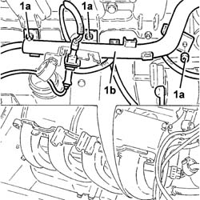
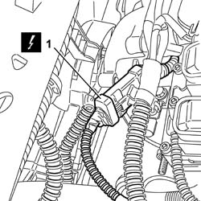
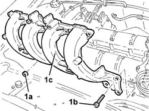

1072B14 inlet manifold - r+r and replace seal with air conveyor/box removed
- Path
- Procedures > 10 ENGINE > 1072 INLET AND EXHAUST MANIFOLDS > 1072B inlet manifolds > 1072B14 inlet manifold - r+r and replace seal with air conveyor/box removed
- Kind
- repair procedure (removal / refitting; the operation number is the code)
- Applies to
- all engines; all production periods
- Interactive page
- https://sloeber94.github.io/elrnDB-fDbl/en/#/2584363
Applies to: all engines; all production periods
 Removing
Removing
 Refitting
RefittingPlace the car on the ramp.
Disconnect the battery negative terminal.
 | Name | Connector |
|---|---|---|
- | Battery | A1 |
1048A32 sleeve from air cleaner to intake manifold - r + r
7055B54 under-engine guard - r r
1084A16 oil dip stick pipe - r r
1084A22 engine oil filler - r r
1. Raise the vehicle, undo the nuts (1a) and move the cable protection (1a).

Applies to: all engines; all production periods
1. Disconnect the electrical connection from the fuel injectors on the single fuel manifold pipe.
| Name | Connector |
|---|---|---|
1 | Injector junction | D81 |

Applies to: all engines; all production periods
1. Undo the nuts (1a) and the bolts (1b), then remove the inlet manifold (1c), complete with gasket.

Applies to: all engines; all production periods
Refitting
RemovingPlace the inlet manifold complete with a new gasket, back in its housing and fix it tightening the bolt and nuts to the recommended torque.
 | Fastening | Component | Ø | Value (daNm) |
|---|---|---|---|---|
- | Bolt | INLET MANIFOLD | M8 | (Cylinder head side) 2.5 |
| Fastening | Component | Ø | Value (daNm) |
|---|---|---|---|---|
- | Nut | INLET MANIFOLD | M8 | (Cylinder head side) 2.5 |
Connect the electrical connections to the injectors.
| Name | Connector |
|---|---|---|
- | Injector junction | D81 |
Place the cable protection back in its housing and secure it using the nuts.
1084A22 engine oil filler - r r
1084A16 oil dip stick pipe - r r
7055B54 under-engine guard - r r
1084A16 oil dip stick pipe - r r
1048A32 sleeve from air cleaner to intake manifold - r + r
Connect the battery negative terminal.
| Name | Connector |
|---|---|---|
- | Battery | A1 |
Remove the car from the ramps.
Topics linked from this page (4)
- 1048A32 sleeve from air cleaner to intake manifold - r + r
- 1084A16 oil dip stick pipe - r r
- 1084A22 engine oil filler - r r
- 7055B54 under-engine guard - r r
Topics that link to this page (8)
- 1016B20 lh cylinder head extension - replace gasket
- 1016B22 lh cylinder head extension - r r with timing belt removed - replace gasket
- 1016B24 rh cylinder head extension - replace gasket
- 1016C10 cylinder head - r + r and replace gasket
- 1036G10 camshaft controlling exhaust valves in top head - r + r with top head removed - includes replacement of top head
- 1036G20 camshaft controlling intake valves in top head - r + r with top head removed - includes replacement of top head if necessary
- 1056B61 single fuel manifold with injectors - r+r with air conveyor/box removed
- 1072B10 inlet manifold - r + r and replace seal